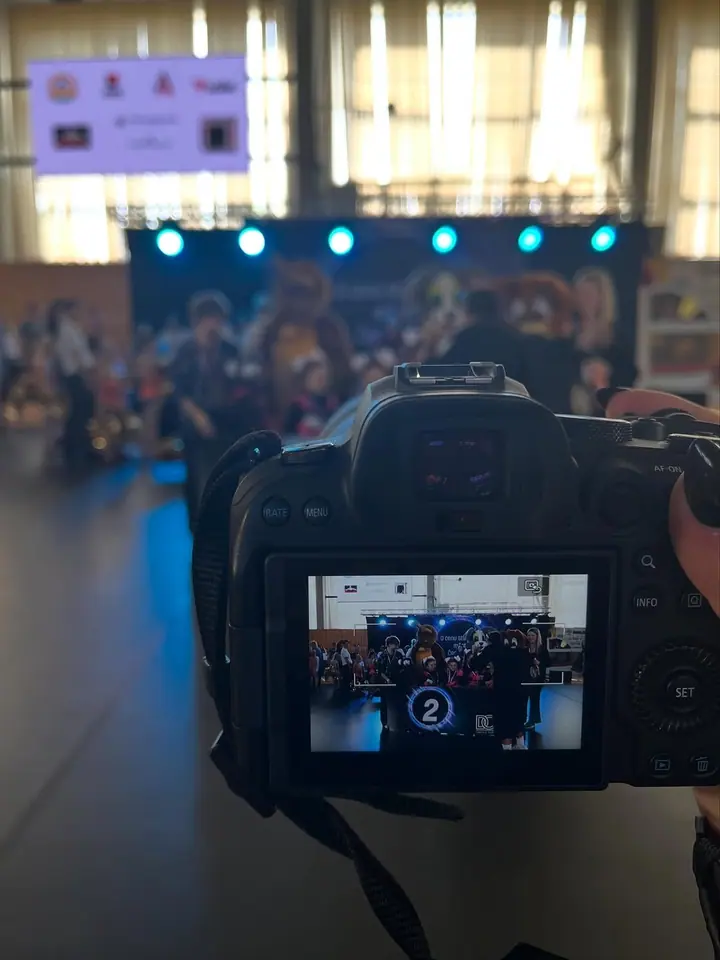
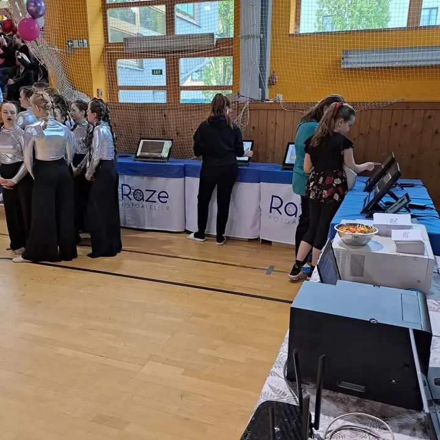
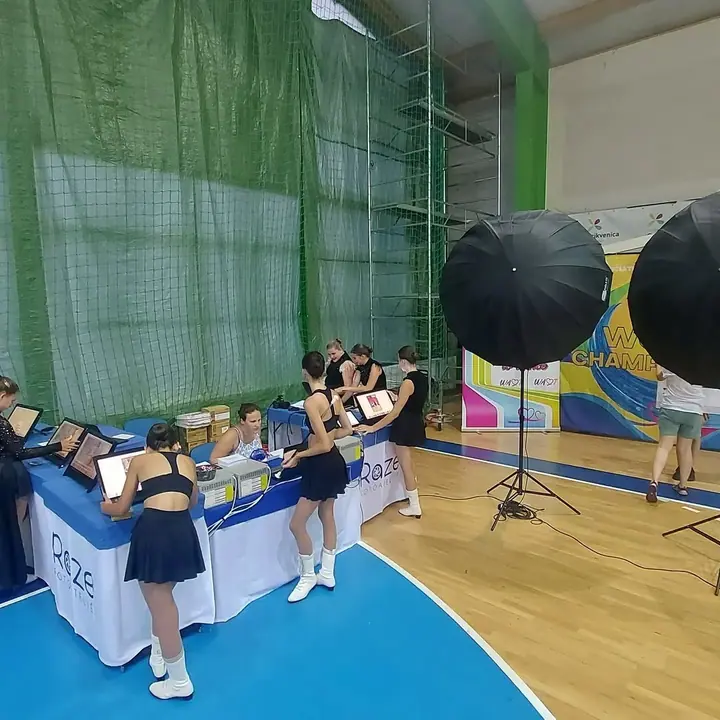
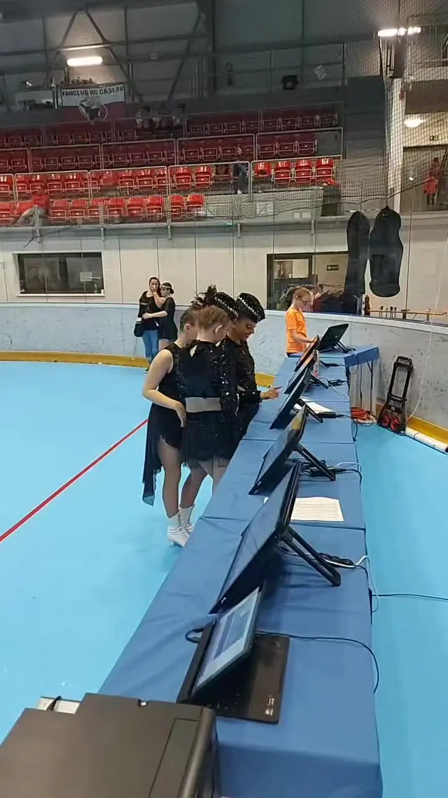
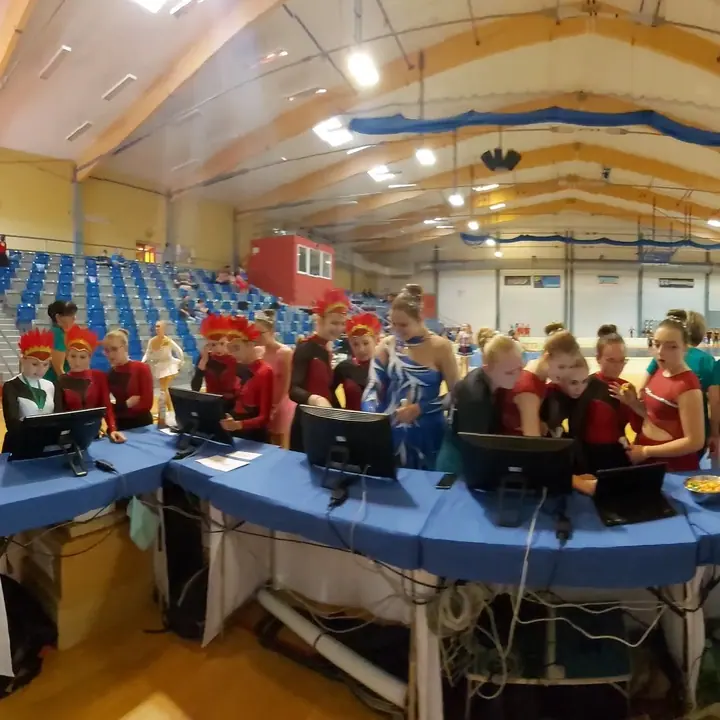
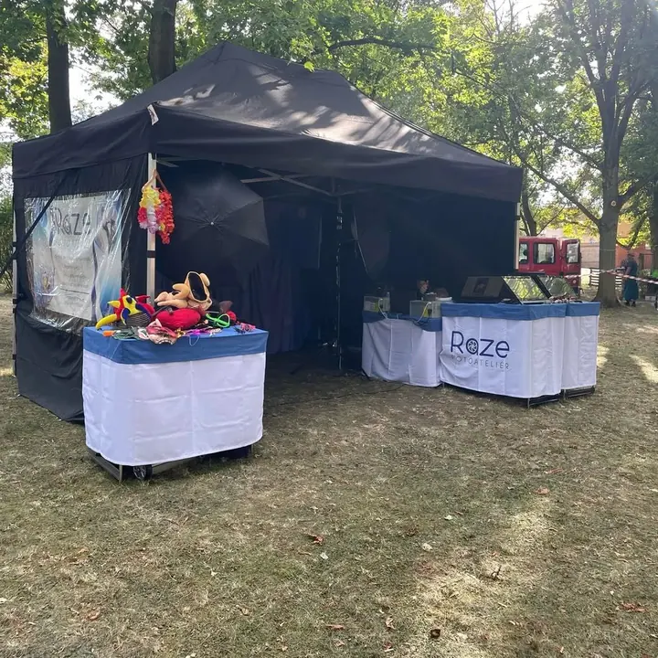
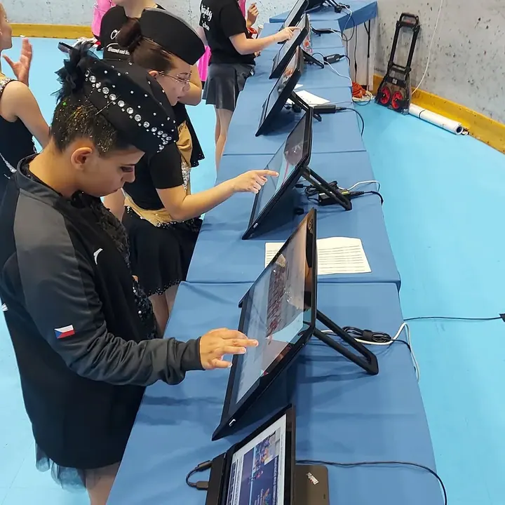
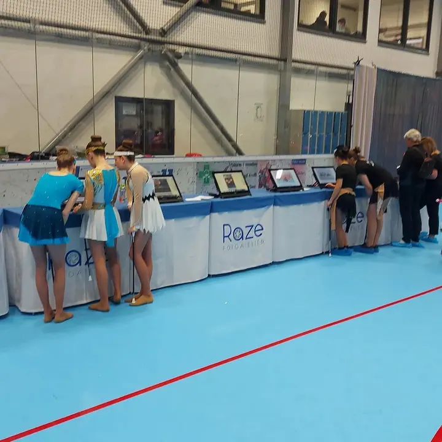
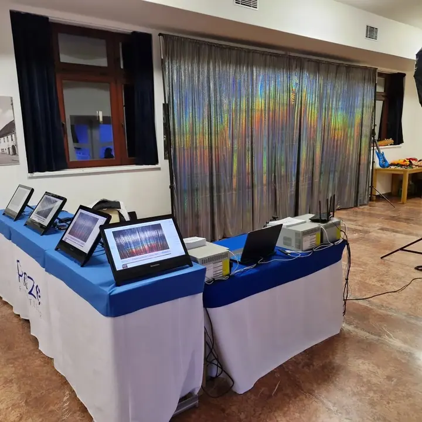

01 / 04
Soutěže
Fotíme taneční a mažoretkové soutěže od prvního nástupu po vyhlášení. Přímo v hale stavíme stanoviště s obrazovkami, kde si soutěžící své fotky prohlédnou a vyberou.
Zeptat se na termín→








Fotky ze soutěže hned na místě
Zeptat se na termín →(01) Ahoj
Jsme Fotoateliér RAZE a fotíme soutěže , plesy a taneční. Na každou akci vozíme vlastní stanoviště s obrazovkami , takže si své fotky najdete ještě ten den.
(02) Co fotím
01 / 04
Fotíme taneční a mažoretkové soutěže od prvního nástupu po vyhlášení. Přímo v hale stavíme stanoviště s obrazovkami, kde si soutěžící své fotky prohlédnou a vyberou.
Zeptat se na termín→02 / 04
Na plese postavíme foto koutek s pozadím a světly. Hosté si fotky prohlédnou na dotykových obrazovkách ještě ten večer.
Zeptat se na termín→03 / 04
Fotíme taneční kurzy a jejich prodloužené i závěrečné lekce. Na fotkách tak zůstane, jak se celý kurz učil první kroky na parketu.
Zeptat se na termín→Dále nabízím
Fotíme akce pro Městský úřad Louny. Rádi přijedeme s fotkami a stanovištěm i na vaši obecní nebo kulturní akci.
↗(04) Postup
Od první zprávy po hotovou galerii.
Krok 1 z 4
Napíšete nám termín, místo a program akce. Společně probereme, kolik účastníků čekáte a jaké stanoviště se k vaší akci hodí.
Krok 2 z 4
Před začátkem postavíme stoly s obrazovkami, případně foto koutek se světly nebo stan venku.
Krok 3 z 4
Fotíme po celou dobu akce a fotky průběžně posíláme na obrazovky, aby si je lidé mohli hned prohlédnout.
Krok 4 z 4
Účastníci si na dotykových obrazovkách najdou své fotky a vyberou si je přímo na místě.
Vy tančíte, my fotíme a fotky čekají u stolu
(05) Za objektivem
Jsme Fotoateliér RAZE a nejčastěji nás potkáte ve sportovních halách a v plesových sálech. Fotíme taneční a mažoretkové soutěže, plesy, taneční kurzy i akce pro Městský úřad Louny.
Na akci nejen fotíme. Postavíme stoly s dotykovými obrazovkami a soutěžící, rodiče i hosté si na nich fotky během akce prohlížejí a rovnou vybírají. Když je potřeba, přivezeme i světla a pozadí na foto koutek.
Na venkovní akce máme vlastní stan, takže nás nezastaví ani louka nebo park. Pořadatelům tak odpadá starost, kdo fotky nafotí a jak se k lidem dostanou.
Fotoateliér
Fotoateliér RAZE · Fotografové soutěží, plesů a tanečních
Už během akce. Fotky průběžně nahráváme na obrazovky u našeho stanoviště, kde si je můžete prohlédnout a vybrat.
Hlavně místo pro stanoviště s obrazovkami a přístup k elektřině. Ostatní přivezeme a postavíme sami, podrobnosti doladíme při domluvě.
Ano. Máme vlastní stan, ve kterém stanoviště postavíme i na louce nebo v parku.
Cenu připravíme podle typu akce, její délky a počtu účastníků. Napište nám a pošleme vám nabídku.
(07) Kontakt
Napište pár vět o tom, co si představujete, a termín, který se vám hodí.
raze@raze.cz